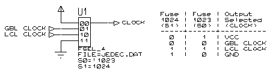

The FSEL primitive models implements a 1-of-n selector where the selected input is determined according to one or more fuses.
The selector has two or more data inputs (D) and a single output (Q) - data at the selected input is transferred to the Q output without delay.
The number of D inputs in the primitive device must be a power of two (i.e. 2, 4, 8, 16, 32, etc.). The input selected is determined according to the combined binary value of one or more fuse expressions specified by the Sn properties (the S0 property forms the least significant bit and the Sn property the most significant bit); the number of Sn properties is thus log2 the number of inputs. The JEDEC file the fuse values are to be found in is specified by the FILE property.
The following example shows a four input FSEL primitive being used to select between one of four clock signals. The clock signal is selected according to the two-bit value formed by the Boolean values of the fuse expressions specified by the S1 (most significant bit) and S0 (least significant bit) properties. Note in particular that the S0 property is set to be the inverse of fuse 1023.

| Pin | Type | Pin Set | Description |
D# |
Input |
#1 |
Data Inputs |
Q |
Output |
- |
Selected inputs |
| Property | Type | Meaning | Default | Notes |
FILE |
Text |
Name of JEDEC file. | See Note |
[1] |
INVQ |
Fuse Expr. |
Invert Q output? | FALSE |
[2] |
Sn |
Fuse Expr. |
Input selected value, Bit n. | See Note |
[3] |
1. The FILE property specifies the path and filename of the JEDEC file to be used for fuse values. There is no default for this property - it must be specified. If none of your fuse expressions contain a fuse number, you can avoid the need to specify a file by assigning a value of [NULL].
2. The Q output is inverted if the expression assigned to this property evaluates TRUE. The expression cannot include references to input pins.
3. See main description for an explanation of these properties.
See Also: